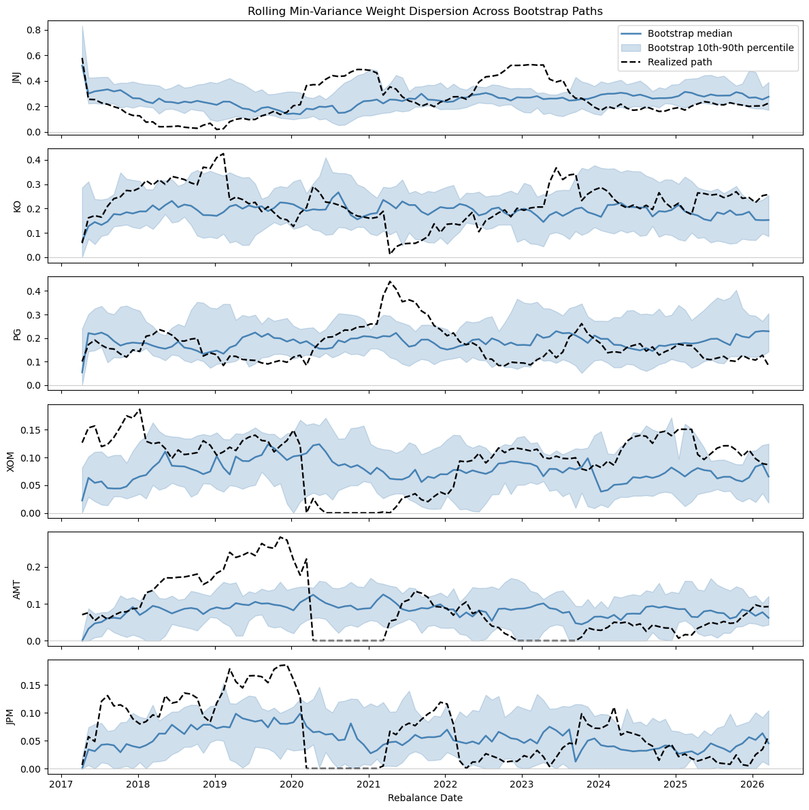
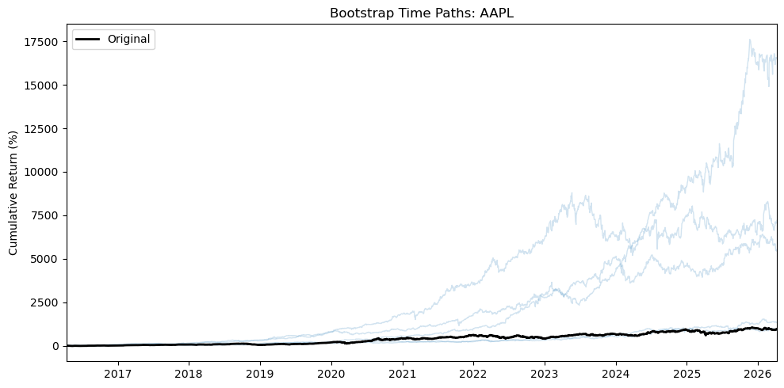
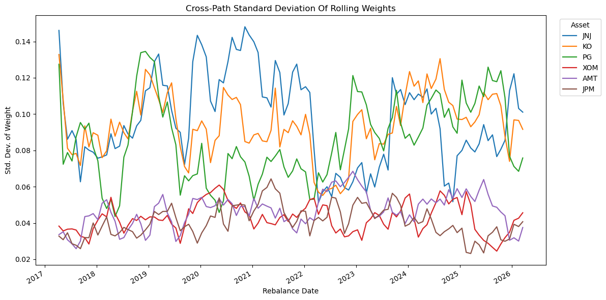
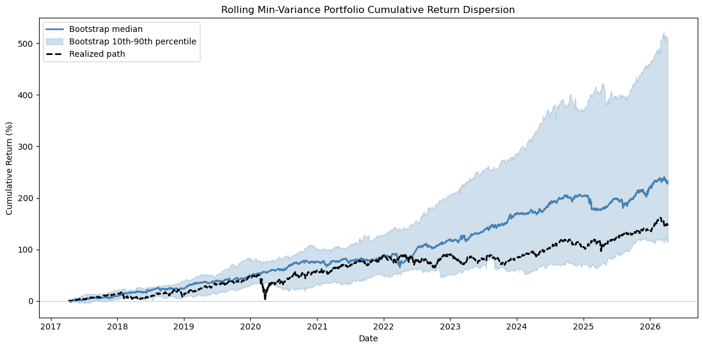

Bootstrap Time Paths
Contiguous return blocks preserve short-horizon dependence while producing alternative histories for the same asset universe.
Path Space Lab
Research artifacts on how portfolio optimization changes when the same return history is resampled into plausible alternative paths.

Contiguous return blocks preserve short-horizon dependence while producing alternative histories for the same asset universe.
Factor-model covariance estimates feed a constrained minimum-variance optimizer at monthly rebalance dates.
The historical path is plotted against bootstrap distributions to show whether the realized outcome is typical or path-specific.


